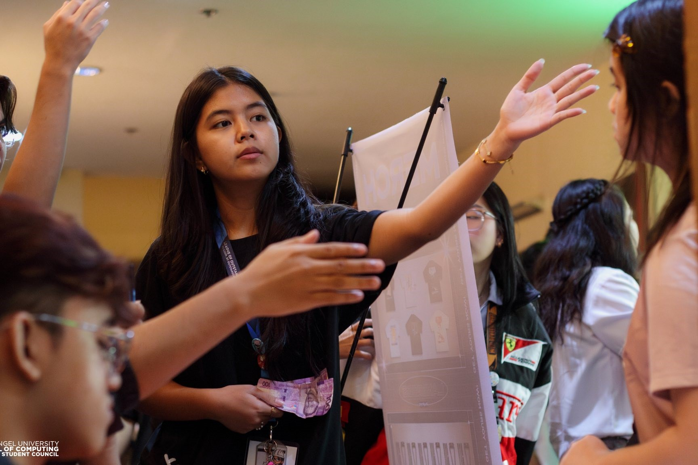
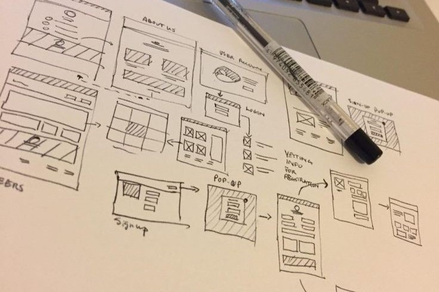

A Little About Me
I'm Joy Sarmiento, a computer science student passionate about designing technology that improves everyday experiences. I'm especially drawn to areas in technology design and development.
- User Interface & User Experience (UI/UX) design
- App Development
- Software Engineering
Interests

I enjoy solving problems and creating user-friendly solutions, bringing ideas to life through clean designs and functional code. When I'm not coding, I focus on growing in technology, design, and leadership.
- I reflect what I've learned or observed in tech.
- I explore open-source tools or join online courses.
- I assist in organizational tasks as an Assistant Leader.
Logic Meets Aesthetics

Beyond functionality, I love creating digital experiences that are intuitive and visually engaging. I aim to design interfaces that work seamlessly and connect with users.
- I sketch wireframes before building prototypes
- I explore layouts, whitespace, and typography hierarchy.
- I balance accessibility with aesthetic appeal in every design.
Quick Info
A quick glance at where I'm from, what I do, and what drives me—personally and professionally.
- 📍 Location
- Porac, Pampanga, Philippines
- 🎓 University
- Holy Angel University
- 📚 Current Year
- 2nd Year (Expected graduation: 2028)
- 🧠 Core Values
- Curiosity • Craftsmanship • Compassion
- 💡 Motto
- "Code with purpose. Design with empathy. Learn without limits."
For more information about me, visit my GitHub^^.